Ujaval Gandhi
Ujaval Gandhiმუშაობა ატრიბუტებთან (QGIS3)¶
GIS მონაცემები ორი ნაწილისგან შედგება — ობიექტებისგან (Features) და ატრიბუტებისგან (Attributes). ატრიბუტები არის სტრუქტურირებული მონაცემები თითოეული ობიექტის შესახებ. ეს სახელმძღვანელო გვიჩვენებს, თუ როგორ ვნახოთ GIS ვექტორული ფენის ატრიბუტები და როგორ შევასრულოთ მათზე საბაზისო მოთხოვნები (Queries) QGIS-ში.
ამოცანის მიმოხილვა¶
ამ სახელმძღვანელოს მონაცემთა ნაკრები შეიცავს ინფორმაციას მსოფლიოს დასახლებული პუნქტების შესახებ. დავალება მდგომარეობს იმაში, რომ მოვძებნოთ (Query) მსოფლიოს ყველა ის დედაქალაქი, რომელთა მოსახლეობა 1 მილიონზე მეტია და მიღებული ქვეჯგუფი შევინახოთ GeoJSON ფაილის სახით.
სხვა უნარები, რომლებსაც ისწავლით¶
ობიექტების შერჩევა ფენიდან გამოსახულებების (Expressions) გამოყენებით.
Attributes (ატრიბუტების) ხელსაწყოთა ზოლის გამოყენებით.
ფენიდან შერჩეული ობიექტების ექსპორტირება
მონაცემების მიღება¶
Natural Earth გთავაზობთ დასახლებული პუნქტების Populated Places მონაცემთა ნაკრებს. გადმოწერეთ მარტივი (ნაკლები სვეტით) მონაცემთა ნაკრები.
მოხერხებულობისთვის, შეგიძლიათ პირდაპირ გადმოწეროთ მონაცემთა ნაკრების ასლი ქვემოთ მოცემული ბმულიდან:
ne_10m_populated_places_simple.zip
მონაცემთა პირველწყარო [NATURALEARTH]
მოქმედებათა თანმიმდევრობა¶
მოძებნეთ
ne_10m_populated_places_simple.zipფაილი QGIS-ის ბრაუზერში (Browser) და გაშალეთ იგი. აირჩიეთne_10m_populated_places_simple.shpფაილი და გადაათრიეთ სამუშაო არეზე (Canvas).
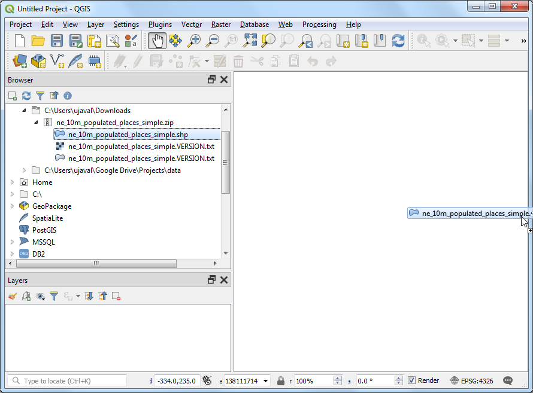
ახალი ფენა
ne_10m_populated_places_simpleჩაიტვირთება QGIS-ში და თქვენ დაინახავთ მრავალ წერტილს, რომლებიც მსოფლიოს დასახლებულ პუნქტებს წარმოადგენს. QGIS-ის სამუშაო არეზე (canvas) ნაგულისხმევი ხედი აჩვენებს GIS ფენის გეომეტრიას. თითოეულ წერტილს ასევე გააჩნია დაკავშირებული ატრიბუტები. მოდით, ვნახოთ ისინი. მოძებნეთ Attributes Toolbar (ატრიბუტების ხელსაწყოთა ზოლი). ეს პანელი შეიცავს ბევრ სასარგებლო ხელსაწყოს ფენის ატრიბუტების შესასწავლად, დასათვალიერებლად, შესარჩევად და შესაცვლელად.
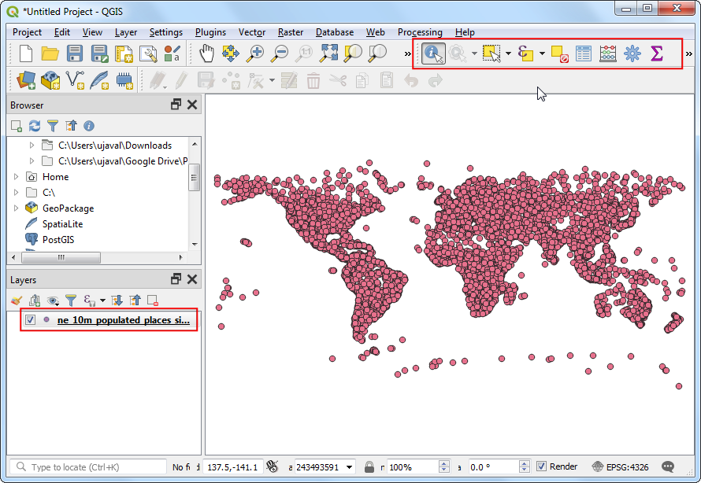
ნოტი
თუ ვერ ხედავთ ხელსაწყოთა ზოლს, შეგიძლიათ ჩართოთ იგი მენიუდან (ხედვა --> ხელსაწყოთა ზოლები --> ატრიბუტების ხელსაწყოთა ზოლი).
დააჭირეთ Identify (იდენტიფიცირება) ღილაკს Attributes Toolbar (ატრიბუტების ხელსაწყოთა ზოლზე). ხელსაწყოს არჩევის შემდეგ, დააწკაპუნეთ ნებისმიერ წერტილზე სამუშაო არეზე (canvas). ამ წერტილის დაკავშირებული ატრიბუტები გამოჩნდება ახალ პანელში — Identify Results (იდენტიფიცირების შედეგები). მას შემდეგ, რაც დაასრულებთ სხვადასხვა წერტილის ატრიბუტების გაცნობას, შეგიძლიათ დააჭიროთ Close (დახურვა) ღილაკს.
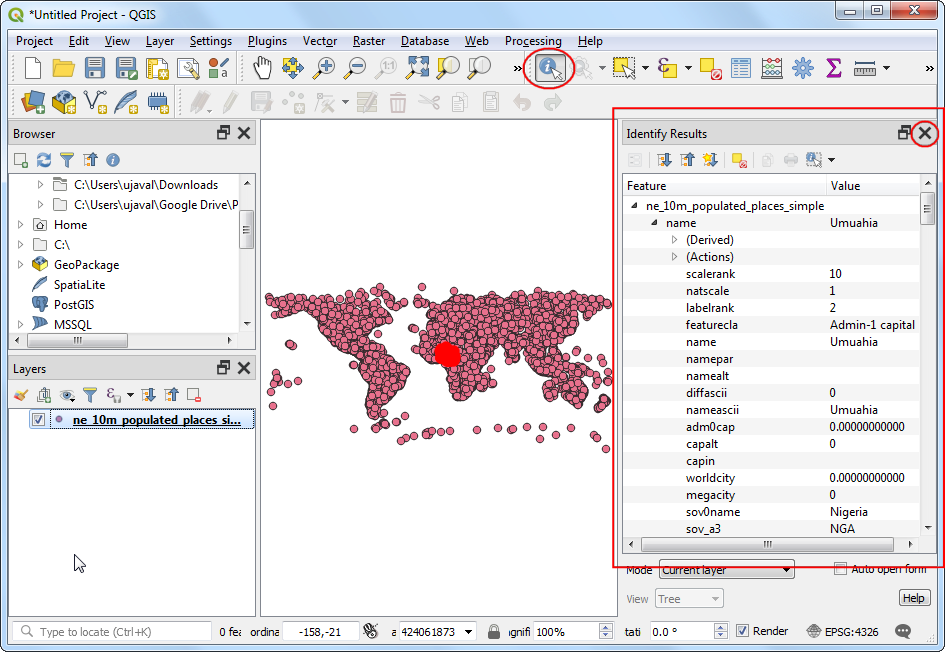
იმის ნაცვლად, რომ ნახოთ ატრიბუტები თითოეული ობიექტისთვის ცალ-ცალკე, შეგიძლიათ ნახოთ ისინი ერთად, ცხრილის სახით. დააჭირეთ Open Attribute Table (ატრიბუტების ცხრილის გახსნა) ღილაკს Attributes Toolbar (ატრიბუტების ხელსაწყოთა ზოლზე). თქვენ ასევე შეგიძლიათ დააწკაპუნოთ მაუსის მარჯვენა ღილაკით
ne_10m_populated_places_simpleფენაზე და აირჩიოთ Open Attribute Table.
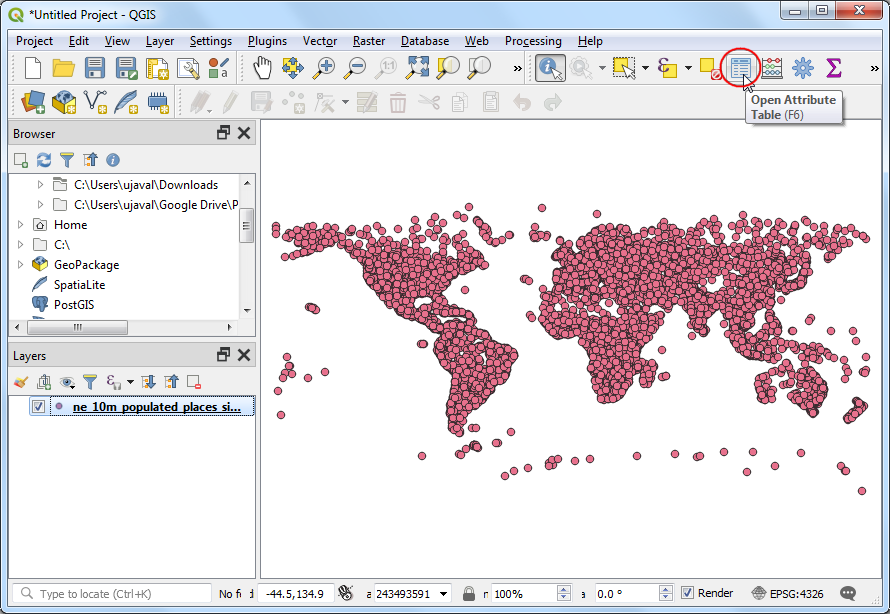
შეგიძლიათ ჰორიზონტალურად გადაადგილდეთ (scroll) და იპოვოთ pop_max სვეტი. ეს ველი შეიცავს შესაბამისი პუნქტის მოსახლეობის რაოდენობას. შეგიძლიათ ორჯერ დააწკაპუნოთ ველის სათაურზე, რათა დაახარისხოთ სვეტი კლებადობით.
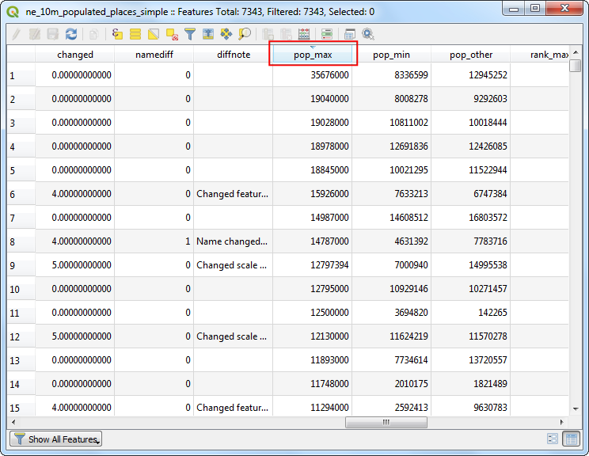
ახლა ჩვენ მზად ვართ შევასრულოთ მოთხოვნა (Query) ამ ატრიბუტებზე. QGIS იყენებს SQL-ის მსგავს გამოსახულებებს მოთხოვნების შესასრულებლად. დააჭირეთ Select features using an expression (ობიექტების შერჩევა გამოსახულების გამოყენებით) ღილაკს.
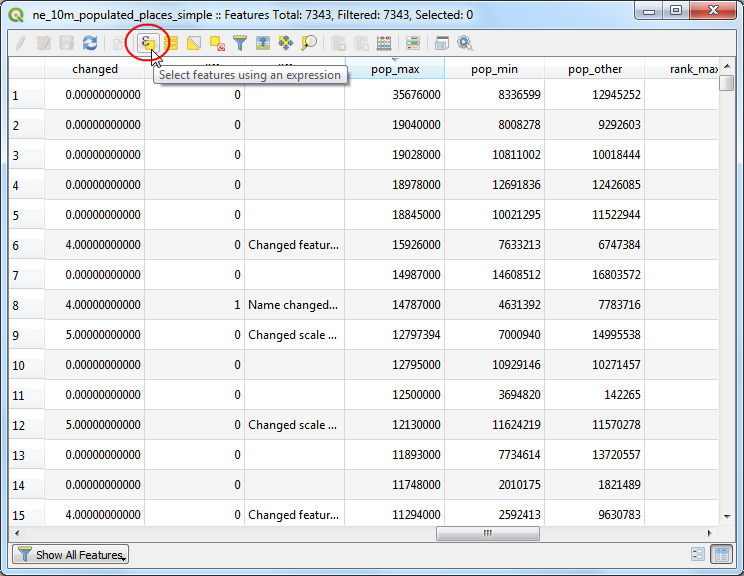
Select By Expression (შერჩევა გამოსახულების მიხედვით) ფანჯარაში გაშალეთ სექცია Fields and Values (ველები და მნიშვნელობები) და ორჯერ დააწკაპუნეთ წარწერაზე
pop_max. შეამჩნევთ, რომ ის დაემატება გამოსახულების სექციას ქვედა ნაწილში. თუ არ ხართ დარწმუნებული ველის მნიშვნელობებში, შეგიძლიათ დააჭიროთ ღილაკს All Unique (ყველა უნიკალური), რათა ნახოთ, რა ატრიბუტული მნიშვნელობებია მოცემულ მონაცემთა ნაკრებში. ამ სავარჯიშოსთვის ჩვენ ვეძებთ ყველა იმ ობიექტს, რომლის მოსახლეობა 1 მილიონზე მეტია. ამიტომ, დაასრულეთ გამოსახულება ქვემოთ მოცემული სახით და დააჭირეთ Select Features (ობიექტების შერჩევა), შემდეგ კი — Close (დახურვა).
"pop_max" > 1000000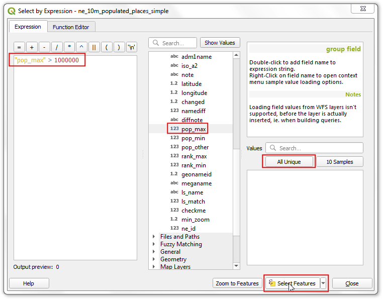
ნოტი
QGIS-ის გამოსახულებების სისტემაში (Expression engine), ორმაგ ბრჭყალებში მოქცეული ტექსტი მიუთითებს ველს (field), ხოლო ერთმაგ ბრჭყალებში მოქცეული ტექსტი — სტრიქონულ მნიშვნელობას (string value).
შეამჩნევთ, რომ ატრიბუტების ცხრილში ზოგიერთი მწკრივი ახლა მონიშნულია. ასევე შეიცვლება წარწერა ფანჯრის ქვედა ნაწილში, სადაც გამოჩნდება შერჩეული ობიექტების რაოდენობა.
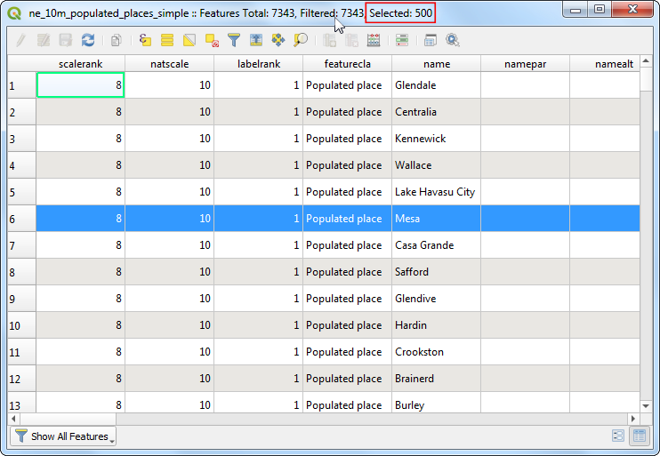
დახურეთ ატრიბუტების ცხრილის ფანჯარა და დაუბრუნდით QGIS-ის მთავარ ფანჯარას. შეამჩნევთ, რომ წერტილების ქვეჯგუფი ახლა ყვითლადაა გამოსახული. ეს ჩვენი მოთხოვნის (Query) შედეგია — შერჩეული წერტილებია ის ობიექტები, რომელთა ატრიბუტის
pop_maxმნიშვნელობა მეტია1000000-ზე.
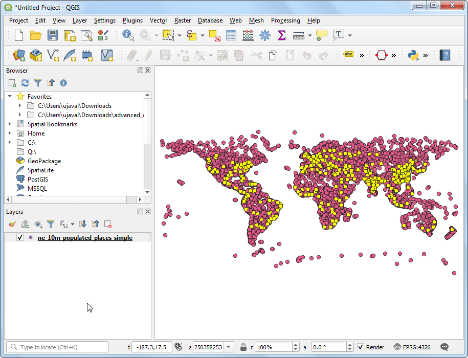
მოდით, განვაახლოთ ჩვენი მოთხოვნა (Query) და დავამატოთ პირობა, რომლის მიხედვითაც პუნქტი, 1 მილიონზე მეტ მოსახლეობასთან ერთად, ასევე უნდა იყოს დედაქალაქი. გამოსახულებების რედაქტორზე სწრაფად გადასასვლელად შეგიძლიათ გამოიყენოთ Select Features by Expression (ობიექტების შერჩევა გამოსახულების მიხედვით) ღილაკი Attributes Toolbar (ატრიბუტების ხელსაწყოთა ზოლზე).
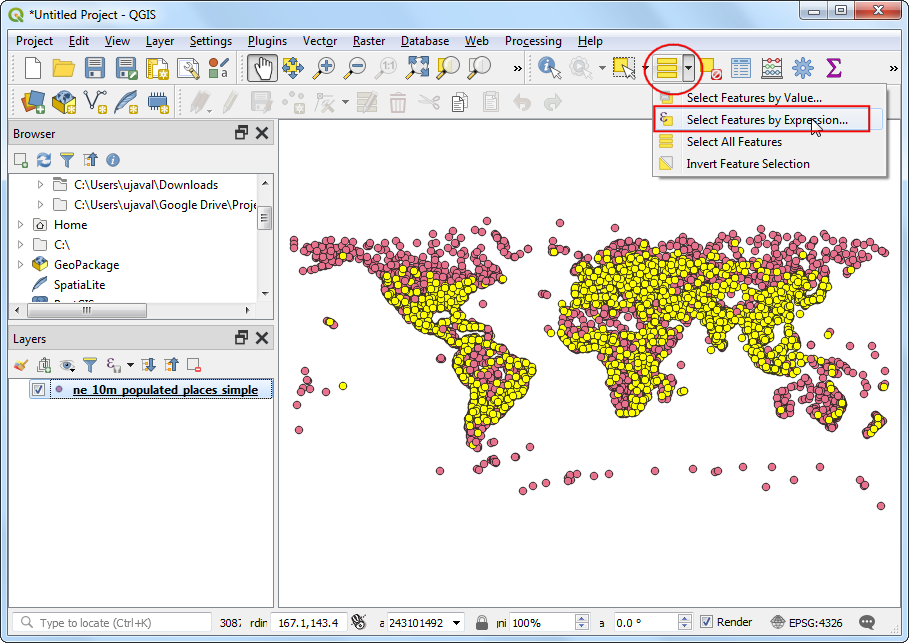
ველი, რომელიც შეიცავს მონაცემებს დედაქალაქების შესახებ, არის adm0cap. მნიშვნელობა 1 მიუთითებს, რომ პუნქტი დედაქალაქია. ჩვენ შეგვიძლია დავამატოთ ეს კრიტერიუმი ჩვენს წინა გამოსახულებას and ოპერატორის გამოყენებით. შეიყვანეთ ქვემოთ მოცემული გამოსახულება და დააჭირეთ Select Features (ობიექტების შერჩევა), შემდეგ კი — Close (დახურვა).
"pop_max" > 1000000 and "adm0cap" = 1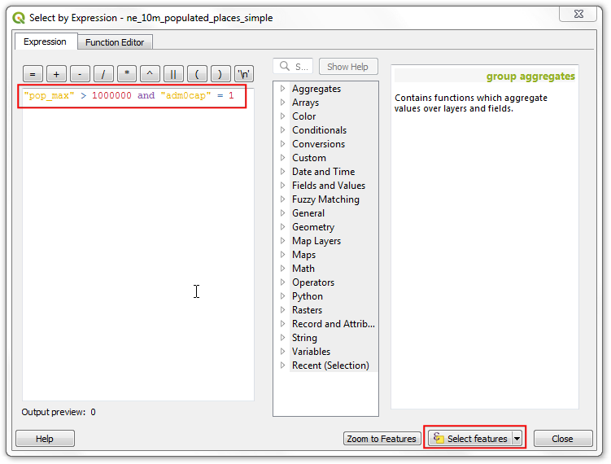
დაუბრუნდით QGIS-ის მთავარ ფანჯარას. ახლა თქვენ დაინახავთ მონიშნული წერტილების უფრო მცირე ქვეჯგუფს. ეს მეორე მოთხოვნის (Query) შედეგია და აჩვენებს მონაცემთა ნაკრებიდან ყველა იმ პუნქტს, რომელიც არის ქვეყნის დედაქალაქი და ამავდროულად მისი მოსახლეობა 1 მილიონზე მეტია.
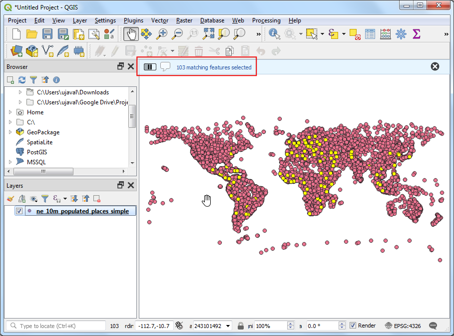
ახლა ჩვენ მოვახდენთ შერჩეული ობიექტების ექსპორტს ახალ ფენად. დააწკაპუნეთ მაუსის მარჯვენა ღილაკით
ne_10m_populated_places_simpleფენაზე და გადადით მენიუში :menuselection:``Export --> Save Selected Features As...` (ექსპორტი --> შერჩეული ობიექტების შენახვა როგორც...).
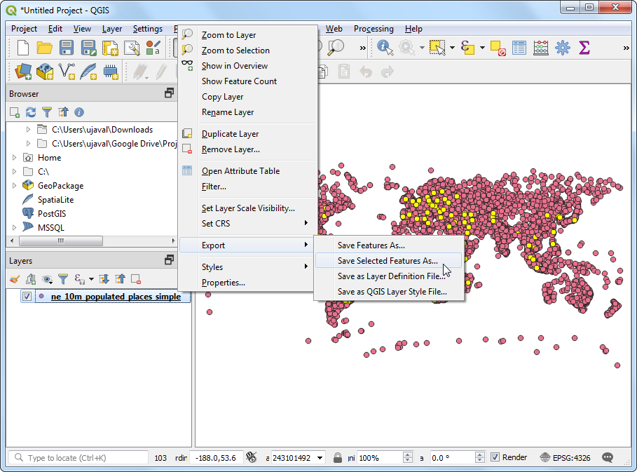
თქვენ შეგიძლიათ აირჩიოთ ნებისმიერი სასურველი ფორმატი Format (ფორმატი) ველში. ამ სავარჯიშოსთვის ჩვენ ავირჩევთ
GeoJSON-ს. GeoJSON არის ტექსტზე დაფუძნებული ფორმატი, რომელიც ფართოდ გამოიყენება ვებ-კარტოგრაფიაში. დააჭირეთ ... ღილაკს File name (ფაილის სახელი) ველის გვერდით და შეიყვანეთ გამოსავალი ფაილის სახელი:populated_capitals.geojson.
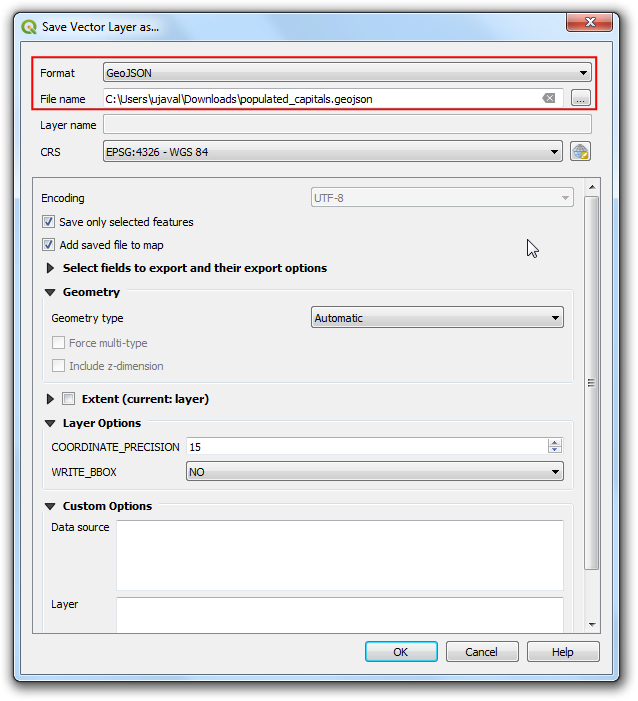
შემავალ მონაცემებს მრავალი სვეტი აქვს. თქვენ შეგიძლიათ აირჩიოთ ორიგინალი სვეტების მხოლოდ გარკვეული ნაწილი ექსპორტისთვის. გაშალეთ სექცია Select fields to export and their export options (საექსპორტო ველების შერჩევა და მათი პარამეტრები). დააჭირეთ Deselect All (ყველაფრის მონიშვნის მოხსნა) და მონიშნეთ მხოლოდ
nameდაpop_maxსვეტები. დააჭირეთ OK.
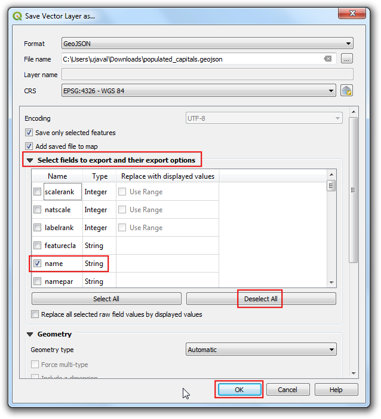
ახალი ფენა
populated_capitalsჩაიტვირთება QGIS-ში. შეგიძლიათ მოხსნათ მონიშვნაne_10m_populated_places_simpleფენას, რათა დამალოთ იგი და დაათვალიეროთ წერტილები ახლად ექსპორტირებული ფენიდან.
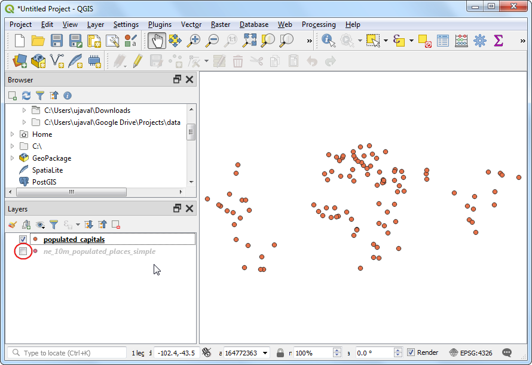
If you want to give feedback or share your experience with this tutorial, please comment below. (requires GitHub account)